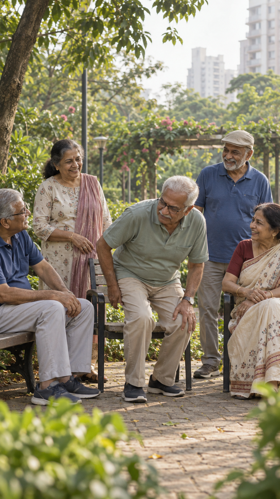

Tell us what daily life feels like
How long it has been, what has changed, and what you have already tried.

Persistent knee pain can change the simplest parts of your day. Explore a personal next step with Dr. Surabhi Vaidya, whether you are ready to speak with a doctor or still understanding your options.
Taking the stairs has become something you plan around.
Standing up after sitting for a while takes a moment.
You have tried other options but still want to understand what comes next.
Someone has mentioned surgery, and you want to discuss your choices carefully.
Your situation deserves more than a one-size-fits-all answer.
A few questions about your knee pain help us suggest where to begin. This is a guide to the next conversation, not a medical assessment.
How long it has been, what has changed, and what you have already tried.
Depending on your answers, that may be a personal consultation or a Hindi educational webinar.
Take the next step with a clearer idea of why it may be useful.
At Charak Health Solutions in Vartak Nagar, Thane, Dr. Surabhi brings together Marma Chikitsa and personalised Ayurvedic pain-management techniques. A consultation begins with understanding your history, daily difficulties and goals before discussing suitable options.
The aim is a thoughtful conversation about pain, mobility and function, with advice tailored to your condition.
We suggest a starting point based on what you tell us. You remain in control of the decision.
Meet Dr. Surabhi at the clinic for a detailed conversation and assessment of suitable next steps.
Understand knee pain, common misconceptions and the questions worth asking before choosing a treatment path.